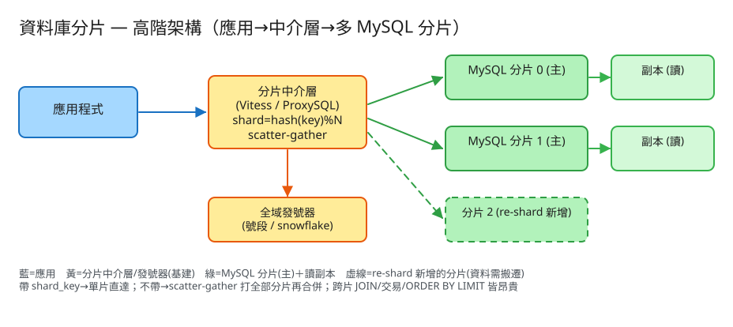

K 分散式系統 看故事就懂 輕鬆讀 25 分鐘
想像一間超大圖書館，書多到一棟樓塞不下，櫃台也忙到排隊排到門口。怎麼辦？ 蓋好幾間分館，把書分散放——這就是資料庫分片（Sharding）：把原本擠在「一台資料庫」裡的資料，水平切開、分散到很多台。
聽起來只是「多買幾台機器」對吧？難的是：書一旦分散到好幾間分館，「怎麼快速找到某本書在哪間館」、「要統計全館總共幾本書」、「每本書怎麼編一個全館不重複的編號」、以及「開新分館時要搬多少書」——這四件事，全都變麻煩了。
很多人第一次看會想：「不就是多開幾個資料庫，把資料丟進去嗎？」——這想法漏掉了「切開之後」才冒出來的麻煩。
這就是分片的核心難點：知道「東西放哪間」就快；不知道、要問遍全部就慢。而且每間店各自編書號會撞號（兩間店都有「1 號書」），開新店還得把舊店的書搬一部分過去。
💭 停一下：為什麼「問全公司總共幾本書」會比「問某本書在哪」慢這麼多？
分片要處理的，其實就是這 4 關，一關一關來：
資料進來，要先決定放第幾台。做法是挑一個欄位當分片鍵（例如「使用者編號」），算一個數字、除以台數取餘數，餘數幾就放第幾台。
👉 面試最愛問：「分片鍵要選哪個欄位？」因為它同時決定「資料放哪」和「哪些查詢會快」。
如果查詢沒帶分片鍵（例如「全公司總共幾筆訂單？」「金額前 10 大的訂單？」），就沒辦法一步直達，只能問遍每一台、再把答案合起來。
這個「撒出去問所有台、再收回來合併」就叫 scatter-gather。它慢，而且要等最慢的那台。所以好的分片設計，會盡量讓查詢都帶分片鍵、走第 1 關的「直達」。
每筆資料要有一個不重複的編號（主鍵）。但如果每台各自從 1 開始編，第 0 台和第 1 台就都會有「1 號」——撞號了！
系統也一樣：用一個全域發號器，把號碼切成不重疊的「號段」分配給各台，各台在自己的號段裡遞增。這樣全系統的編號保證唯一。
資料又長大了，要再加一台。問題來了：原本「除以 2 取餘數」的規則，變成「除以 3 取餘數」——幾乎每筆資料算出來的台號都變了，意思是幾乎全部都要搬家！
這就是取模分片（除以台數取餘數）最大的痛：加機器＝大搬家。工程上的解法：一開始就先切很多「邏輯小櫃」（例如先切 32 櫃，雖然只有 2 台機器，一台先放 16 櫃），擴容時整櫃搬到新機器就好，規則不變、不用重算每封信。這個「重新切、搬資料」的動作就叫 re-shard。
把取捨換個方式記：這個系統最怕三件事，每個設計都是為了避開某個「怕」。

✏️ 用 Excalidraw 開啟編輯（diagram.excalidraw）白話導讀，由左到右一路看：
看完上面，這些詞你其實都已經懂了，這裡只是把「工程術語 ↔ 白話」對起來，Part 2 會用到：
| 工程術語 | 白話解釋 |
|---|---|
| 分片 / Sharding | 一台裝不下時，把資料水平切開分到很多台 |
| 分片鍵 (shard key) | 決定「這筆放哪台」的那個欄位（像分櫃的姓氏） |
| 取模分片 (hash % N) | 算個數字除以台數取餘數，餘數幾就放第幾台 |
| 路由 | 依分片鍵算出「該去哪一台」的動作 |
| 單片直達 | 帶分片鍵的查詢，一步走到一台（最快） |
| scatter-gather | 沒帶分片鍵 → 撒給所有台問、再收回來合併（慢，等最慢那台） |
| 跨片 JOIN / 交易 | 要橫跨好幾台才能完成的關聯/轉帳，又慢又難保證對 |
| 全域 ID / 發號器 | 全系統不重複的編號；用「號段」切給各台各自發 |
| 號段 (segment) | 把號碼切成不重疊的區間（1~1000 給A、1001~2000 給B） |
| re-shard | 加機器時重新切、搬資料；取模分片幾乎要全搬 |
| 熱點 / 傾斜 | 某一台被打爆（分片鍵分不均，如「日期」或大客戶） |
| 讀寫分離 / 副本 | 寫走主、讀走副本，分擔讀流量 |
| 分片中介層 | 夾在應用和多台 MySQL 之間的「總機」(Vitess/ProxySQL)，負責路由與合併 |
| 垂直分 vs 水平分 | 垂直＝不同表/欄位拆庫；水平＝同一張表切多片 |
我們估幾個關鍵數字（數字不必背，重點是感受它的「形狀」）：
| 估什麼 | 大概數字 | 所以呢？ |
|---|---|---|
| 資料量 | 20 億筆 × 1KB ≈ 2TB（加索引再 ×2） | 一台 MySQL 吃緊 → 要切多台 |
| 每秒寫入 | 尖峰 8 萬寫/秒 | 單台主庫寫不動（頂多幾千~上萬）→ 要切多主 |
| 切幾片 | 每片目標 <500GB、<1萬寫/秒 | 大約 8 片起跳，預留成長切 16~32 片 |
| 讀寫比 | 讀:寫 ≈ 10:1 | 每片再掛 2 台讀副本分擔讀 |
💭 停一下：明明只有 2 台機器，為什麼要先切成 32 片？
① 帶分片鍵 → 單片直達（快）
GET /orders?user_id=1001
有 user_id（分片鍵）→ 一步走到那一台 → 超快
② 沒帶分片鍵 → 找遍全部（慢）
GET /orders?status=PAID&sort=amount&limit=20
沒有分片鍵 → 撒給所有台 → 各自查 → 收回來重新排序取前 20看出差別了嗎？同樣是查訂單，帶不帶 user_id 速度天差地遠。設計 API 時要心裡有數：哪些是單片、哪些會 scatter-gather。
③ 寫入 → 路由到對的台 + 拿全域編號
POST /orders { user_id:1001, amount:120 }
→ 算 user_id 落哪台 → 跟發號器要一個全域不重複的 id → 寫進去
④ 運維：加一台分片（re-shard）
POST /admin/reshard { from:16, to:32 }
→ 在背景把資料慢慢複製到新片，追上後再切換（不停機）例如訂單表：id（全域不重複）、user_id（分片鍵）、金額、狀態、時間。
同一個 user_id 的訂單都落在同一台，所以「查某人的訂單」一步直達。
記住：分片鍵是哪個欄位、用什麼規則（除以幾取餘數）、目前切幾片。
中介層每次拿到查詢，就翻這張表決定「直達哪台」或「要不要找遍全部」。
記住每台目前領到的號段用到哪了（像「A 櫃發到 1538 號了」）。 用完一段就再領下一段，保證全系統永不撞號。
| 哪裡會塞車 | 怎麼拓寬 |
|---|---|
| 某一台被打爆（熱點 / 大客戶） | 選分佈均勻的分片鍵；把大客戶加鹽打散或單獨成一片 |
| 太多查詢沒帶分片鍵，一直找遍全部 | 讓相關資料落同一台、把欄位冗餘進來、或交給搜尋引擎做檢索 |
| 跨好幾台的轉帳交易 | 盡量讓交易落在同一台；真要跨台用「分步驟補償」(Saga) |
| 加機器要搬好多資料 | 一開始多切片 + 背景限速搬遷 + 可隨時退回 |
| 讀太多打爆主庫 | 讀走副本（讀寫分離），每台多掛幾台讀副本 |
「Part 1 的三個怕」是核心取捨。這裡補幾個常被面試官追問的：
讀十遍不如玩一遍。這題有一個真的可以跑的小程式，讓你親眼看到「路由 + 找遍全部 + 全域編號 + 搬家」：
# 啟動（在這題的 demo 資料夾裡）
cd demo
php -S localhost:8046 -t public
# 然後瀏覽器打開 http://localhost:8046routed_to）。shards_scanned=1（只打一台，超快）。shards_scanned=N（打了所有片再合併）。moved_pct——你會看到接近 100% 的資料要換家！這就是取模分片 re-shard 的痛。moved_pct，體會為什麼工程師要「一開始就多切片」來避開大搬家。玩過 demo 了，來掀開引擎蓋看看「那幾關到底是哪幾段程式做的」。
好消息：核心都在一個小檔 ShardRouter.php 裡，剛好對應前面講的四關。不用會 PHP，我把程式翻成白話、只留關鍵那幾行，看註解就懂。
核心就一行：把分片鍵算成數字，除以台數取餘數。
function 算落哪片(分片鍵) {
return crc32(分片鍵) % 台數; // 餘數幾 → 放第幾台
}
// 插入時：先算落哪片 → 跟發號器要一個全域 id → 寫進那一片
就這一行 % 台數，決定了每筆資料的家。簡單、均勻——但也正因為「台數」在分母，台數一變，幾乎每筆的餘數都變，這就埋下了第 4 關「大搬家」的伏筆。
查詢帶了分片鍵，就先算出落哪片，只翻那一片：
function 依鍵查詢(分片鍵) {
片 = 算落哪片(分片鍵); // 一步算出在哪台
回傳 該片裡 shard_key 等於它的所有列;
// shards_scanned = 1 ← 只碰一台！
}
這就是「走到『王』那一櫃」——只打一台，最快。回傳的 shards_scanned=1 就是證據。
這是關聯式分片最痛的一段。沒有分片鍵當線索，只能每一片都跑一次、再把結果合起來：
function 跨片聚合(操作) {
對 每一片 s { // ← scatter：撒給所有片
rows = 讀第 s 片;
累加 count、累加 sum、收集所有列;
}
// ← gather：把各片的部分結果合成最終答案
if (操作 == 'sum') return 各片 sum 相加;
if (操作 == 'top') { 把所有列重新排序; 取前 k; } // 中介層二次排序
note = "打了全部 N 片，延遲取決於最慢那片";
}
注意 對 每一片 這個迴圈——它就是 scatter（撒出去問每一台）。最後的相加 / 重新排序就是 gather（收回來合併）。
台數越多越慢，還要等最慢那台。這就是為什麼設計時要拼命讓查詢「帶分片鍵」走第 2 關。
編號用「號段」讓各片不撞號；加片時老老實實算「誰要換家」：
// 全域編號：第 s 片的號 = s × 號段 + 該片本地序號 → 跨片永不重複
function 發號(片 s) { return s × 號段大小 + 該片下一個序號++; }
// 加一台片：N → N+1，幾乎每筆都要重算落點
function 加一片() {
對 每一筆資料 {
新片 = crc32(分片鍵) % (N+1); // 用新台數重算
if (新片 != 舊片) 記下「這筆要換家：舊片→新片」;
}
回報 換家比例; // 取模分片 → 往往接近 100%！
}
看到 % (N+1) 了嗎？分母從 N 變 N+1，餘數幾乎全變 → 幾乎全部換家。
這段就是 demo 裡讓你看到 moved_pct 接近 100% 的真相，也是「為什麼要一開始多切片」最有力的證據。
| 關卡（前面講的） | 哪個函式 | 關鍵那行 |
|---|---|---|
| ① 路由（放哪台） | shardOf | crc32(key) % 台數 |
| ② 單片直達 | getByKey | shards_scanned=1 |
| ③ 找遍全部 | aggregate | 對每一片 的迴圈（scatter-gather） |
| ④ 全域編號 + 搬家 | nextId / addShard | s×號段+序號、% (N+1) |
👉 重點：真實系統會把「JSON 檔 + 迴圈」換成「多台 MySQL + Vitess 中介層 + 線上搬遷」， 但上面這幾段判斷邏輯一字都不用改。所以讀懂這個小 demo，你就讀懂了這題的核心。
先不要看答案，自己用講給朋友聽的方式回答看看（講得出來才是真的懂）：
資料庫分片 = 一台裝不下/忙不過來時，把資料水平切到很多台。
4 個關卡：① 用分片鍵路由（放哪台）→ ② 沒線索就找遍全部再合併（scatter-gather）→ ③ 全域發號（號段，別撞號）→ ④ 加機器要搬家（re-shard，取模分片幾乎全搬）。
3 個怕：怕分片鍵選錯（改它＝重灌）、怕跨片的事（JOIN/交易/排序都貴，能不跨就不跨）、怕熱點（某台被打爆，要分得均勻+打散大客戶）。
工程細節一句話：先副本→垂直分→才水平分片；分片鍵選最高頻查詢的均勻欄位；一開始多切片避開大搬家；跨片查詢能共置就共置、不行就交給搜尋引擎；全域編號用號段或 snowflake；擴容用線上複製+切流不停機。
想看更精簡、面試速查用的版本？👉 前往完整版（同樣內容的工程速查格式）。